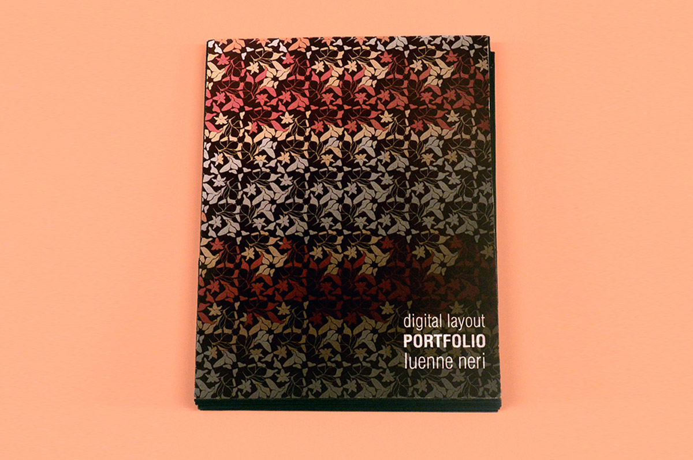
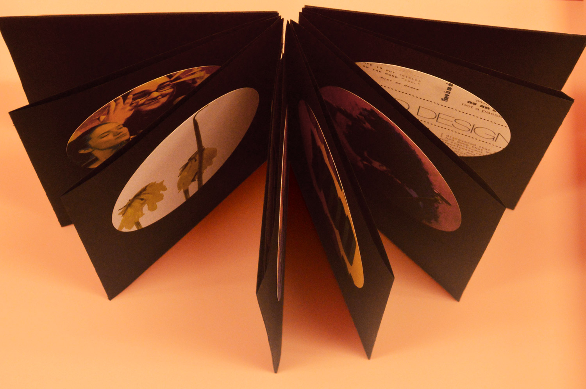
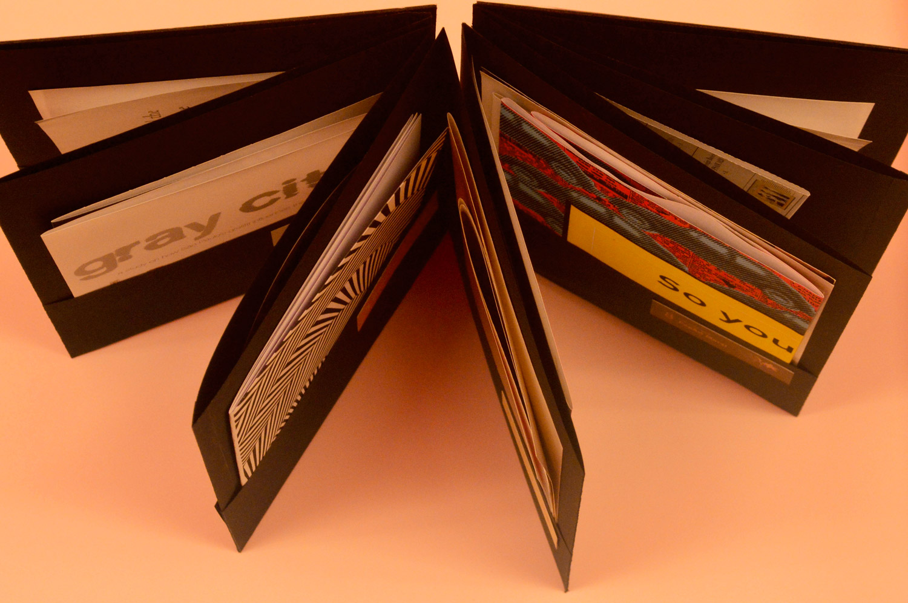
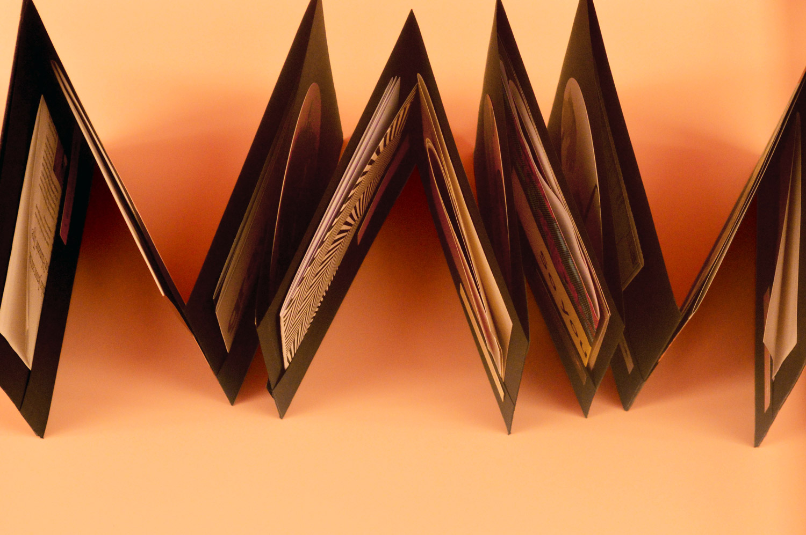
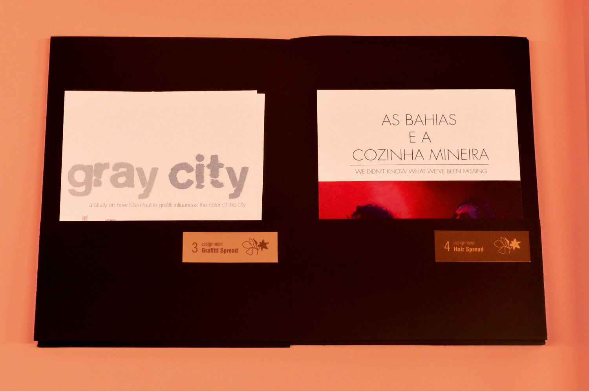
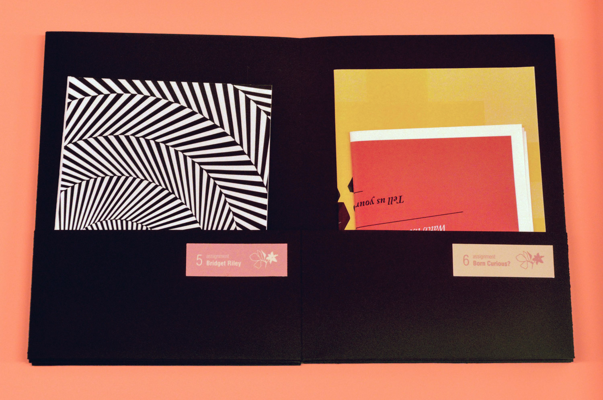
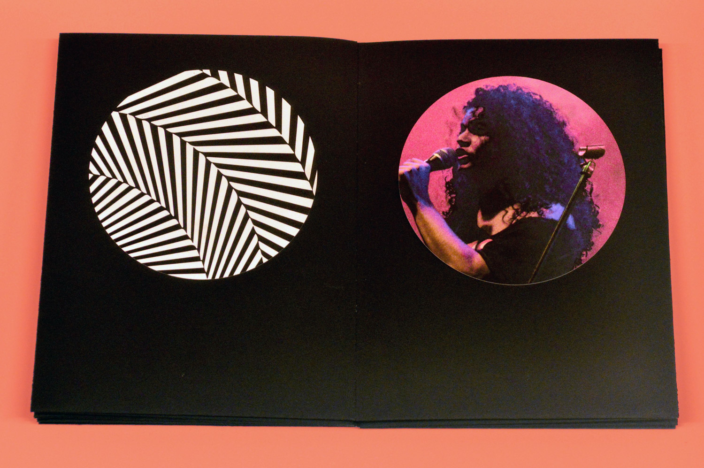
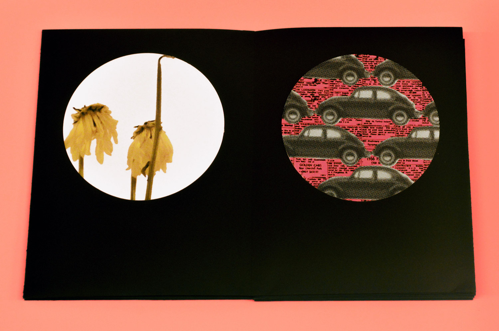

digital layouts
portfolio with works from a Digital Layouts course
This portfolio was designed for a course I took at Parsons, named Digital Layouts, in which we had to put together all of our works of the semester. I chose to organize it in an accordion structure book, to give it more dynamics through the reading, as well as the option to display it opened, so that the viewer could witness the progress made throughout the course.
In each week we were assigned to design a layout for:
1. an article 2. a poster 3. a spread 4. a spread 5. a booklet 6. a poster 7. an illustration 8. a pop art mural 9. a spread 10. a table 11. a collage 12. an image for an ad.







